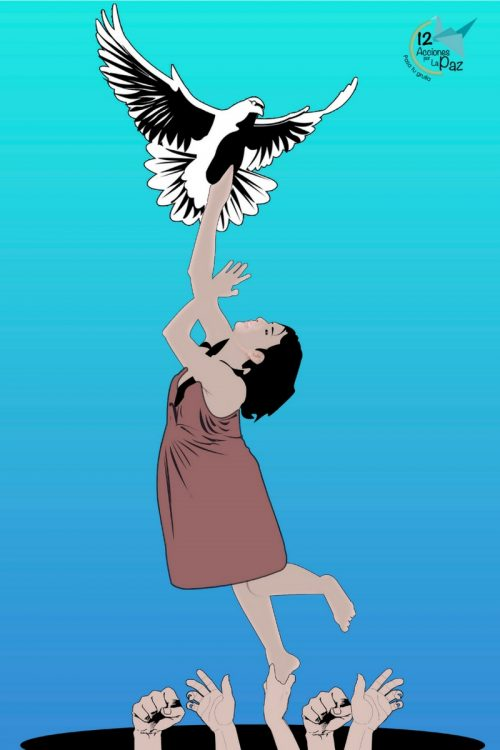

La sociedad mexicana, como la de muchos otros países latinoamericanos, es plural en su composición étnica, dadas las importantes culturas precolombinas que había en la región cuando los conquistadores españoles hicieron su llegada en el siglo XV. Muchas de ellas sobreviven aún hoy, y deben lidiar con la discriminación de muchos de sus compatriotas occidentalizados, quienes creen que sus culturas son «atrasadas», y por ende juzgan los rasgos indígenas como inferiores. Según encuestas, 5 de cada 10 mexicanos afirman haberse sentido discriminados por su apariencia. Sin embargo, este tipo de discriminación racial y étnica es constantemente combatida por el Estado, especialmente desde la creación del Consejo Nacional para Prevenir la Discriminación (CONAPRED) en 2003, como organismo ejecutor de la Ley Federal para Prevenir y Eliminar la Discriminación.

La discriminación social se produce cuando una persona es tratada como inferior. Por ejemplo, por pertenecer a una clase social diferente. En conformidad con el artículo 7 de la Declaración Universal de los Derechos Humanos de 1948: "todos son iguales ante la Ley y tienen, sin distinción, derecho a igual protección de la Ley. Todos tienen derecho a igual protección contra toda discriminación que infrinja esta Declaración y contra toda provocación a tal discriminación". Con los años, la Organización de las Naciones Unidas (ONU) ha hecho varios esfuerzos para erradicar la discriminación en las sociedades de los países miembros. En México, el Consejo nacional para prevenir la discriminación (CONAPRED) es un ejemplo para erradicar este mal. Además, en 2003 se creó la "Ley Federal para Prevenir y Eliminar la Discriminación". Esta defiende a los discriminados cuando se demuestra que existen conductas contra el ejercicio de un derecho en razón de las características de las personas
La discriminación positiva fue diseñada en algunas sociedades para tomar acciones con el fin de combatir las consecuencias de la discriminación recibida por ciertos grupos sociales. Las medidas positivas procuran garantizar un buen trato y brindar oportunidades a las comunidades históricamente excluidas. Ejemplo de esto es el ofrecimiento de becas de estudio a jóvenes de escasos recursos económicos. Dar empleo a personas que tienen un tipo de discapacidad, pero que aun así pueden realizar diversas tareas, entre otras acciones positivas.
La discriminación de género, también denominada sexismo, es una acción en la que una persona es tratada como inferior, sujeta a un trato desigual, en comparación con las personas de género masculino y heterosexual, que puede involucrar salarios más bajos, maltratos y desigualdad en el acceso a trabajos y servicios. Esta forma de discriminación se ejerce sobre todo con las mujeres, los homosexuales y otras minorías de carácter sexual, que a veces se agravan al combinarse con otras formas de discriminación, como el racismo, la homofobia o la xenofobia. A modo de ejemplo, y de acuerdo con cifras de UNICEF (Fondo de las Naciones Unidas para la Infancia), 2,5 mujeres de cada 10 carecen de empleo o no se están educando (entre los hombres la cifra es de 1 de cada 10). Otras estadísticas señalan que la diferencia de salarios entre hombres y mujeres en todo el mundo supera el 26% (a favor de los hombres), y que 1 niña de cada 20 ha sido atacada sexualmente. La discriminación de género está muy extendida en el mundo y sigue siendo un grave problema que solo puede solucionarse con la participación activa de todos nosotros.